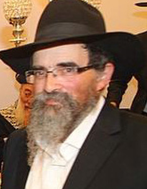

Encouragement and Joy for Israeli Soldiers
R’ Eliezer Lichtstein shares his recollections of the massive activities, which he coordinated, that Lubavitchers from Yerushalayim did with soldiers on bases and posts throughout the country.

Our work began in Yerushalayim but we soon traveled to army camps in the Jordan Valley and the north of the country too.
At the beginning of Cheshvan the Rebbe said to reach all the soldiers, including those on the front lines and in the rear guard. In a special operation of Lubavitchers from all over the country, we distributed booklets with words of encouragement from the Rebbe, and put t’fillin on with soldiers. Despite the great difficulty because of the security situation, we infused a spirit of joy to replace the despondency among the soldiers.
The operation was complicated and dangerous as sometimes it was carried out under fire. We sometimes traveled immense distances in order to reach all the army camps and cheer up the soldiers. The spirit behind this operation was R’ Zushe Partisan – Wilyamowsky a”h. Every morning R’ Zushe would come to Yerushalayim to work together with us. He encouraged us by saying that the Chassidim in Yerushalayim are the most outstanding in this mivtza. He didn’t just say it, for the Chassidim in Yerushalayim worked very hard during the Yom Kippur War.
On a number of occasions the Rebbe said to give out coins for blessing in his name. We received instructions during broadcasts of the Rebbe’s farbrengens [R’ Lichtstein was the coordinator of the broadcasts in Eretz Yisroel] which occurred in the middle of the night. In the morning, when Bank Israel opened, I would go to the teller I was friendly with and within half an hour I had a big supply of new coins. These coins were given out to the soldiers.
On the way to the big army camps we would detour to the temporary camps on the side of the road. During the war they prepared for all sorts of terrible eventualities, which is why they prepared temporary camps in various places. There was fear that Jordan would enter the war. We found out about this when time and again we encountered soldiers digging the length of the Kvish HaBik’a [the section of what is now Highway 90 that runs through the Jordan Valley]. The army was setting out explosives the length of the area. The plan was that in the event that the Jordanian army tried to invade Israel with their armored corps the IDF would simply blow up the entire highway.
We visited out of the way and secret army camps. I remember that Rechavam Zeevi, H’yd (“Gandhi”), then a commander, suddenly met us. “How did you get here?” he asked in undisguised surprise. We told him that the Rebbe told us to reach all the soldiers and we were following orders.
During the war, evenings of “Song with Chabad” were organized for soldiers. The Chassidic niggunim and dancing transformed the despair to simcha.
On Yud-Tes Kislev we arranged a special evening. By divine providence, R’ Chaim Gutnick of Australia, who had served as a military chaplain in the Australian army, came to Eretz Yisroel a few hours before the event. When we found out about this, we brought him to address the soldiers.
The soldiers were fascinated by him and the high ranking insignias on his shoulders. It was silent when he spoke. Toward the end he said that, as a high ranking officer, many soldiers saluted him every day. “Now I feel I ought to salute you, for you are fighting for the Holy Land and for the preservation of the Jewish people.”
This drew tremendous applause from the soldiers who were amazed by the Australian officer who saluted them, simple soldiers.
After his speech, a boy who recently came from Russia sang in Russian and Hebrew. This was none other than Sholom Yaakov Chazan who was a young student in Yeshivas Toras Emes and is today an editor at Beis Moshiach. Then R’ Tzvi Greenwald spoke.
This evening uplifted the soldiers to another world. There was a pleasant atmosphere that was an anomaly in those dark days.
These were the positive results of a successful campaign, to bring joy to the soldiers along with the light of mitzvos, as instructed by the Rebbe.
Berger. "Encouragement and Joy for Israeli Soldiers." Beis Moshiach, no. 913 (January 30, 2014).